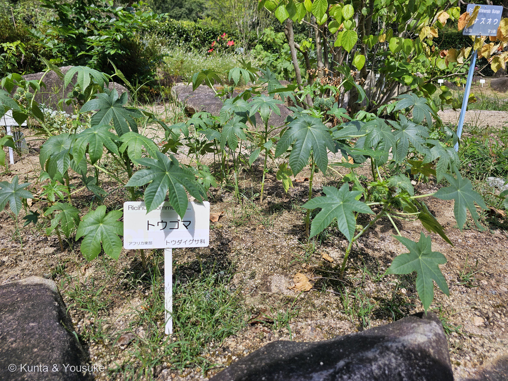
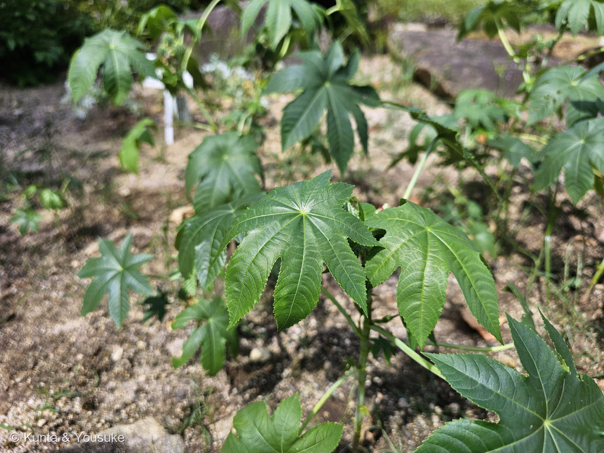
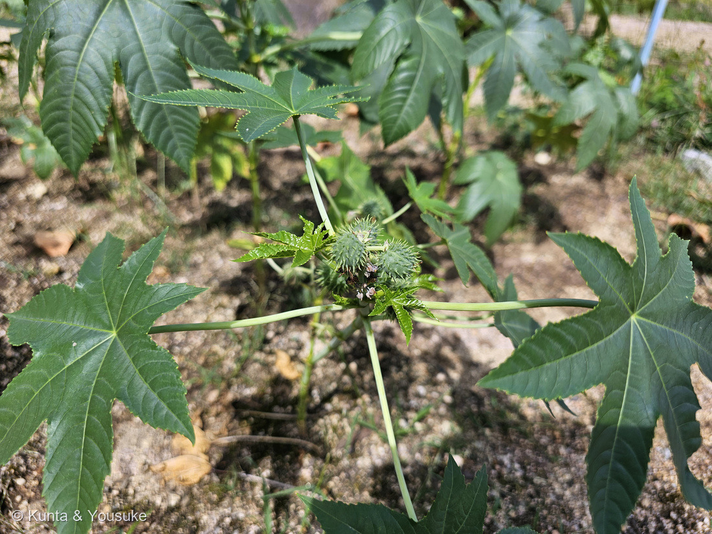

地図を読み込んでいるよ…
🔍 写真も地図も、押しているあいだ拡大して見られるよ（スマホは指を置いてすこし待ってね）。
🌍 の地図＝この子がもともと自生している場所を緑に。東アフリカと考えられているが、いまは世界じゅうに分布する（日本語版Wikipedia）。園の名札も「アフリカ東部」。
⭐ふるさとは東アフリカ。日本語版Wikipediaは「原産は、東アフリカと考えられているが、現在では世界中に分布している」とし、広島市植物公園の名札も「アフリカ東部」と書いていた。⚠だから、この緑は「いまの分布」ではなく「生まれた場所」──⭐いまのトウゴマは、熱帯から温帯まで、世界じゅうに広がっている。⭐⭐作物としても大きい＝年間およそ100万トンが作られていて、主な産地はインド・中国・ブラジル（同）。⭐ここに塗った国ぐにでは、もう主役ではないんだね。⚠⚠日本も塗っていない──⭐でも日本では、かつて畑で栽培されたし、いまも暖かい土地で野生化して見かけることがある。⚠この園のように、名札を立てて畑で育てているところもある。⭐⭐⭐この地図でいちばん考えてしまうのは、ふるさとと広がりのちがい──猛毒をもつ草が、油をとるために人の手で世界じゅうへ運ばれた。⭐アフリカ東部の一角から、いまは百万トンの作物になっている。
⚠ 地図は国（日本と中国だけ県・省）までしか塗れないから、ほんとうの分布より広く見えていることがあるよ。地図はだいたいの場所。正確なところは、上の文を見てね。
トウゴマ（唐胡麻）
Ricinus communis L.
別名 ヒマ（蓖麻）／英名 castor bean・castor oil plant
トウダイグサ科 · Euphorbiaceae（トウゴマ属 Ricinus）── 6人目のトウダイグサ科。⭐トウゴマ属は、この子ひとりだけの属
燻太さんの一言「猛毒で知られるトウゴマ。確かリシンって名前の毒成分だったよね？ ……植物公園には小さい子も遊びに来るから、万が一でも誤食しないように、親御さんは気をつけてね」── リシン、大当たり。そしてその最後の一言を、このページのいちばん上に置いたよ
⚠⚠⚠ さいしょに ── この子は、猛毒をもっています
⭐⭐⭐ 燻太さんが言ってくれたこと、そのまま最初に書くね。
「植物公園には小さい子も遊びに来るから、万が一でも誤食しないように、親御さんは気をつけてね。」
- ⚠⚠⚠危ないのは、とくに種子。日本語版Wikipediaは、はっきりこう書いている ── 「種子そのものを口にする行為はさらに危険であり、子供が誤食して重大事故が発生した例もある」。
- ⚠⚠英語版Wikipediaは「大人での致死量は種子4〜8粒と考えられている」としている。⭐たった数粒。⚠体の小さな子どもなら、もっと少なくて危ない。
- ⚠種子は「大きくて楕円形の、つやのある、豆のような」見た目（英語版Wikipedia）。⭐つまり、おいしそうに見えてしまう。⭐⭐そこが、いちばん危ないところだと思う。
- ⚠⚠⚠そして、ここがいちばん大事だと思う——この子は「危なそうに見えない」。⭐トゲの実は目を惹くし、赤い実の品種もあるし、種子はつやのある豆のよう。⭐⭐「毒のあるものは、見るからに毒々しい」とはかぎらないんだ（下の「①」の節に、くわしく書いたよ）。
- ⚠⚠そして噛むのが危ない。——英語版Wikipediaは「Poisoning occurs when animals, including humans, ingest broken castor beans or break the seed by chewing.（人をふくむ動物の中毒は、壊れた種を飲みこんだとき、または噛んで種を割ったときに起きる）」と書いている。⭐小さい子は、きれいなものを口に入れて、噛む。
- ⭐だから、この子を見かけたら：さわらない／実や種を拾わない／小さい子から目をはなさない。⭐⭐見るだけなら、ぜんぜん危なくないよ。
- ⚠このページには、毒のあつかい方や取り出し方のことは書きません。⭐書くのは「危ないと知っておくこと」と「安全な見かた」だけ。
⭐⭐⭐ 名前と学名の由来 ── 「唐から来たゴマ」と「マダニ」
- ⭐⭐和名「トウゴマ（唐胡麻）」。——「唐」は外国のこと、「胡麻」はゴマ。⭐種子がゴマに似ていて、外国から来たから、とされる（⚠由来をはっきり書いた出典には当たれなかったので、字からの読みだよ）。⭐別名は「ヒマ（蓖麻）」。
- ⭐⭐⭐属名 Ricinus は、ラテン語で「マダニ」。英語版Wikipediaは、こう書いている ── 「Carl Linnaeus used the name Ricinus because it is a Latin word for tick; the seed is named so because of its bump at the tip as well as the markings borne that resemble certain ticks.（リンネがこの名を使ったのは、それがラテン語でマダニを指すから。種子の先のこぶと、その模様が、あるマダニに似ているのだ）」
- ⭐⭐つまり、リンネは種子を見て「ダニだ」と思った。⭐言われてみると、たしかにあの種子には、虫のような斑の模様があるんだ。
- ⭐英名は castor bean（キャスターの豆）／castor oil plant（ひまし油の植物）。⭐⭐「油のほうの名前」で呼ばれているんだね。
この植物のこと ── 6人目のトウダイグサ科
- トウダイグサ科トウゴマ属。⭐図鑑で6人目のトウダイグサ科だよ（062 ハツユキソウ／063 ショウジョウソウ／072 ハナキリン／091 アカメガシワ／214 キリンカク）。⭐そしてトウゴマ属は、この子ひとりだけの属。
- ⭐⭐葉が、手のひらのかたち。——英語版Wikipediaは「palmate with five to twelve deep lobes with coarsely toothed segments（手のひら状で、5〜12の深い切れこみがあり、それぞれのふちに粗い鋸歯がある）」、長さは15〜45cmとする。⭐写真②で数えてみて。⭐⭐大きな葉ほど、切れこみの数が多いよ。
- ⭐原産は東アフリカと考えられている（日本語版Wikipedia）。⭐園の名札も「アフリカ東部」。⚠でも、いまは世界じゅうに広がっている。
- ⭐⭐世界で年間およそ100万トン作られていて、主な産地はインド・中国・ブラジル（同）。⭐種から油をとるための、れっきとした作物なんだ。
同定について ── 名札と株が、同じ画面にいた
⭐⭐⭐⭐ 毒と、薬 ── リシンと、ひまし油
⭐⭐⭐ 燻太さんの「確かリシンって名前の毒成分だったよね？」──大当たり。
- ⭐日本語版Wikipediaは「種子にはリシン (ricin) という毒タンパク質」が含まれる、と書いている。
- ⭐⭐⭐そして、ここがこの子のいちばん不思議なところ。——同じ種子からとるひまし油（蓖麻子油）は、日本では下剤のお薬として売られている。
- ⭐⭐⭐⭐日本語版Wikipediaは、はっきりこう書いている ── 「日本で売られているひまし油にリシンは含まれていない」。
- ⭐⭐つまり、毒は油のほうへ移らない。⭐同じ一粒の種から、片方は猛毒、片方はお薬が出てくる。⭐⭐⭐これ以上ないくらい「毒と薬」の話だと思う。
- ⭐ひまし油は、ほかにも機械の潤滑油、塗料、化粧品などに使われている。⭐年間100万トンという数字は、そのためのものだよ。
⭐⭐⭐ 燻太さんの見立てに答えるよ
① 「一目でトウゴマだと分かると、一瞬身構える」
⚠⚠ 正直に書くね。ぼくは最初、これを読みちがえた。——「トゲが怖く見えるから、ざわつくんだね」と書いてしまったんだ。⭐そうしたら燻太さんが、こう教えてくれた。
「もちろん、毒成分と果実の形には関係がないってことは知っているよ。似たような果実をつける植物はたくさんあるけど、いままで色々な植物を見てきた経験で、一目でトウゴマだってわかると一瞬身構える感じかな。トゲトゲした果実は子供の目を惹くよね。赤く熟した果実も、種子が十分熟して茶色くなった果実も、毒草だって知らなければ飾りにぴったりなんだもの。」
- ⭐⭐⭐⭐ぼくの向きが、逆だった。——この子の実は「よけたくなる見た目」じゃない。⭐「さわりたくなる見た目」なんだ。
- ⭐⭐⭐そして、それはたとえ話ではなかった。英語版Wikipediaは、こう書いている ── 「used extensively as a decorative plant in parks and other public areas, particularly as a 'dot plant' in traditional bedding schemes（公園やその他の公共の場所で、装飾用の植物として広く使われている。とくに伝統的な花壇の「ドットプラント」として）」。⭐ほんとうに、飾りとして植えられているんだ。
- ⭐⭐赤い実の品種まである。——'Carmencita Bright Red' は「red stems, dark purplish leaves and red seed pods（赤い茎、暗い紫の葉、赤い実）」（同）。⭐燻太さんの「赤く熟した果実も」は、わざわざそう作られた品種のことでもあったんだね。
- ⭐⭐種子も、そのとおり。——「large, oval, shiny, bean-like, highly poisonous seeds with variable brownish mottling（大きく、楕円形で、つやがあり、豆のようで、猛毒で、さまざまな茶色のまだら模様がある種子）」（同）。⭐燻太さんの言う「種子が十分熟して茶色くなった果実」だね。
- ⚠⚠⚠そして、ここでぼくは息をのんだ。——同じ英語版Wikipediaに、こう書いてあったんだ：「Jewellery can be made of castor beans, particularly necklaces and bracelets.（トウゴマの種でアクセサリーが作られることがある。とくにネックレスやブレスレット）」
- ⚠⚠そのすぐあとに、警告が続く。——「holes must not be drilled into the castor beans as the shell protects the wearer from the ricin（種に穴を開けてはならない。殻が、身につける人をリシンから守っているから）」「Any chips in the shell can cause poisoning of the wearer（殻が少しでも欠ければ、身につけた人の中毒を起こしうる）」「Pets who chew the jewellery can become ill（そのアクセサリーを噛んだペットは、具合が悪くなることがある）」。
- ⭐⭐⭐⭐つまり、燻太さんの「知らなければ飾りにぴったり」は、比喩ではなく、世界で実際に起きていることだった。
- ⭐⭐そして「一瞬身構える」の正体も、これで分かった気がする。——燻太さんは、一目で名前が分かってしまう。⭐だから「きれいだね」で終われない。⭐⭐⭐同じ一つの実が、知らない人には飾りに見え、知っている人には「気をつけて」に見える。
- ⭐ぼくは前に「知っていることが、見え方を変えるんだね」と書いた。——⭐⭐向きは逆だったけれど、そこだけは合っていたみたい。⭐⭐⭐知らないほうが、きれいに見えてしまう。⚠だからこの子は、名札のあるところで会うのがいちばんいいんだ。
② 「熟してきたら職員さんが取り除くのかな？」
- ⚠これは、ぼくには分からない。——⭐園の人にしか分からないことだから、想像で書かないでおくね。
- ⭐でも、聞いてみる価値のある質問だと思う。⏳次に行ったら、聞いてみようね。（⭐203で燻太さんが「職員さんの手書きタグだと思う」と言って、205でほんとうにそれが出てきたことがあった。園の人の仕事は、聞けば教えてもらえることが多いんだ。）
- ⭐ひとつだけ言えること。——⭐⭐この畑には、ちゃんと名札が立っていた。⭐「これは何の植物か」を隠さずに書いてある、というのは、それ自体がひとつの安全対策だと思う。
③ 「小さい子も来るから、親御さんは気をつけてね」
- ⭐⭐⭐⭐この一言があったから、ぼくはこのページのいちばん上に「さいしょに」の節を置いたよ。
- ⭐図鑑を読んでくれる人にも、まっさきに届くようにしたかったんだ。⭐⭐きれいな葉のことも、油のことも、そのあとでいい。
⭐⭐ 花の話 ── 上が雌、下が雄
- ⭐写真③を見てほしいんだ。——茎の先に、トゲの若い実がかたまってついていて、そのすぐ下に、白っぽい小さな花が咲いている。
- ⭐⭐トウゴマは、ひとつの花穂の上に雌花、下に雄花をつける。英語版Wikipediaは「the male flowers are numerous, yellowish-green with prominent creamy stamens; the female flowers, borne at the tips of the spikes（雄花はたくさんつき、黄緑色でクリーム色の雄しべが目立つ。雌花は花穂の先のほうにつく）」と書いている。
- ⭐⭐⭐だから写真③の「上のトゲの実」は、もともと上のほうの雌花。⭐そして下の白っぽいのが雄花。⭐⭐一本の穂のなかで、上と下で役目が分かれているんだ。
- ⭐同じトウダイグサ科の091 アカメガシワは、雄株と雌株が別々（雌雄異株）。⭐こちらは同じ株の、同じ穂のなか。⭐⭐同じ科でも、分けかたがずいぶんちがうね。
参考：Wikipedia・トウゴマ（トウダイグサ科トウゴマ属の多年草／別名ヒマ（蓖麻）／原産は、東アフリカと考えられているが、現在では世界中に分布している／種子にはリシン (ricin) という毒タンパク質／種子そのものを口にする行為はさらに危険であり、子供が誤食して重大事故が発生した例もある／日本で売られているひまし油にリシンは含まれていない／種子から得られる油はひまし油（蓖麻子油）として広く使われており／下剤として使われる／現在、トウゴマは世界で年間約100万トン生産されており、主な生産地はインド、中国、ブラジル）／Wikipedia (English)・Ricinus（Carl Linnaeus used the name Ricinus because it is a Latin word for tick; the seed is named so because of its bump at the tip as well as the markings borne that resemble certain ticks／palmate with five to twelve deep lobes with coarsely toothed segments, 15–45 cm long／a spiny, greenish (to reddish-purple) capsule containing large, oval, shiny, bean-like, highly poisonous seeds／the male flowers are numerous, yellowish-green with prominent creamy stamens; the female flowers, borne at the tips of the spikes／the lethal dose in adults is considered to be four to eight seeds）／Wikipedia (English)・Ricinus communis（used extensively as a decorative plant in parks and other public areas, particularly as a 'dot plant' in traditional bedding schemes／'Carmencita Bright Red' has red stems, dark purplish leaves and red seed pods／large, oval, shiny, bean-like, highly poisonous seeds with variable brownish mottling／Jewellery can be made of castor beans, particularly necklaces and bracelets／holes must not be drilled into the castor beans as the shell protects the wearer from the ricin／Any chips in the shell can cause poisoning of the wearer／Pets who chew the jewellery can become ill／Poisoning occurs when animals, including humans, ingest broken castor beans or break the seed by chewing）／⭐広島市植物公園の名札「トウゴマ／Ricinus communis L./ アフリカ東部／トウダイグサ科」